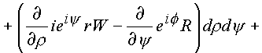
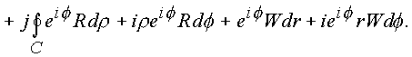
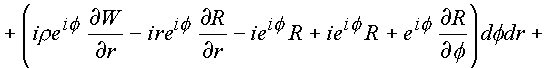
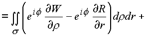
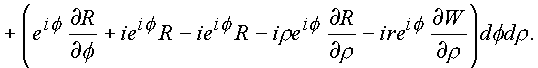
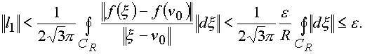

|
В. И. ЕЛИСЕЕВ ВВЕДЕНИЕ В МЕТОДЫ ТЕОРИИ
ФУНКЦИЙ ПРОСТРАНСТВЕННОГО КОМПЛЕКСНОГО ПЕРЕМЕННОГО |
- Елисеев В.И. Числовое поле. Введение в ТФКПП. - Елисеев В.И. Оси координат физической реальности.
- Елисеев В.И. Введение в ТФКПП. 2003 |
1.3.5. Интегральные теоремы Коши
Теорема 1 Если функция
f(n ) имеет производную в односвязной области G комплексного пространства (n ), то для всех кривых, лежащих в этой области и имеющих общие концы, интеграл имеет одно и то же значение.Доказательство. Определение интеграла переносятся без изменений из z-плоскости.
Рассмотрим интегральную теорему 1 в пространстве по кривой С
3 и ее модификациям, как главной пространственной кривой, которая лежит в односвязной области G пространства (n ), так как поверхность сферы и поверхность выколотой оси принадлежат одной области G с одним пространственным измерением.Рассмотрим комплексное пространство в цилиндрических координатах
Дифференциал элемента n равен
Функция
f(n ) распадается на сумму двух комплексных частейСоставим интеграл
.Разобьем его на два комплексных интеграла
где
(1.44.) |
|
(1.45.) |
В интегралах
l1 и l2 сделаем переход по формуле Стокса к поверхностным интегралам. Условий, которые ограничивали бы применение формулы Стокса к составленному интегралу, в пространстве нет. Четырехмерное пространство имеет шесть проекционных площадок, которые до настоящего времени не удалось установить. В комплексном пространстве эти площадки удалось выявить.Итак, имеем:

(1.46.) |



(1.47.) |
В подынтегральных выражениях (1.44.), (1.45.) содержатся необходимые условия дифференцирования функции в формах (1.28.), (1.29.). Таким образом, если входящая под знак интеграла функция имеет производную в каждой точке поверхности s четырехмерного пространства (n ), то оба интеграла равны нулю.
Рассмотрим вариант цилиндрических координат в трехмерном пространстве.
Если
то
Составим интеграл
и рассмотрим его реализацию на различных кривых Сi в пространстве.А. На кривых
C0, C1, C2 (рис. 19) контур лежит в плоскости, параллельной z-плоскости, поэтому у негоОпределим дифференциал
Составим интеграл •
Последовательно рассматриваем оба интеграла
l1, l2:
Криволинейный интеграл сведен к поверхностному по области s
.Если подынтегральные функции
(1.48.) |
|
(1.49.) |
оказываются равными нулю, то контур С
0 можно последовательно стянуть в контур С, охватывающий цилиндрическую ось.Для аналитических функций в пространстве операторы (1.46.), (1.47.) равны нулю, так как они легко получаются из условий (1.27.), необходимых для дифференцирования функций.
В. Рассмотрим интеграл по контуру
C5, лежащему на цилиндрической поверхности (рис. 20).Имеем дифференциал
Составим интеграл и по формуле Грина перейдем к поверхностному интегралу.Имеем
Рис. 25. Кривая C5 и поверхность s , лежащие на цилиндрической поверхности.
Рассмотрим последовательно каждый из полученных интегралов:
где за
P3 и Р4 обозначены:(1.50.) |
|
(1.51.) |
Эти операторы получаются из необходимых условий дифференцирования функций, данных в форме (1.27.). Поэтому интеграл равен нулю.
С. Третий случай: контур
C находится на поверхности . В этом случае дифференциалинтеграл
Подынтегральные выражения и в этом случае соответствуют необходимым условиям дифференцирования функций в форме (1.28.), Интеграл не зависит от формы пространственной кривой.
Д. Четвертый случай обобщает все предыдущие. Возьмем интеграл по простейшей пространственной кривой
C3.Дифференциал
составим интеграл


Рассмотрим поочередно полученные интегралы
l1 и l2.


Первый интеграл содержит в подынтегральных выражениях операторы P
2, P1, которые вытекают из необходимых условий дифференцирования функций в форме (1.28) и само условие (1.28.). Второй содержит операторы P4, P3, и условие (1.28.) также вытекающие из условий (1.23.). В связи с этим и для общего случая справедливо утверждение: кривую С3 можно стянуть в геометрически подобную кривуюРис. 26. Перенос изолированного направления в особую точку
Общий случай показывает, что поверхностные интегралы
l1, l2 по формуле Остроградского при общих условиях ее применения могут быть переведены в объемные интегралы.В этом случае поверхность должна без точек самопересечения натянута на кривую
C3. Эта поверхность должна содержать объем и образовывать тело. В конкретном случае это тор, или сфера с выколотым e -туннелем.Имеем

На языке векторных полей последние выкладки утверждают, что пространственное комплексное поле является безвихревым и соленоидальным.
Если в пространстве (n ) задана вектор-функция
, то имеем следующую последовательность реализации векторных теорем:или как в классическом анализе
и комплексное пространство потенциально.
В результате исследований криволинейного интеграла получены:
Теорема 2. Пусть С
3 - замкнутый (в геометрическом смысле) контур в пространстве (n ) и такой, что существТеорема 3. Пусть функция
f(n ) дифференцируема в односвязной области G пространства (n ) и пусть простая замкнутая кривая С3 лежит в G и ориентируема в положительном направлении.Тогда для любой точки n
0, лежащей внутри области, охватываемой поверхностью, натянутой на кривую С3 справедлива формула(1.52.) |
Доказательство. На замкнутую кривую С
3 для дифференцируемых функций наложены условия равенства
где контур
Функция
f(x ) аналитична в пространстве (n ) в области G с выколотым e - туннелем, проходящим через точку n 0. В пространстве для этой функции происходит перенос e - туннеля из начала координат так, чтобы он проходил через точку n 0. Иными словами, чтобы знаменательбыл равен делителям нуля. В классическом активе обычно знаменатель приравнивался. нулю x
-n 0=0.Выберем контур
Рассмотрим интегралы
J2 и J1:в силу непрерывности функции
f(y ) в точке n 0 для любого e >0 найдется такое , что неравенство .
.
выполняется, как только
. Следовательно, как только , будет выполняться оценка
Учитывая, что
J1 не зависит от R, получаем, что J1=0, то есть J=f(n ). Формула доказана. Полученный результат можно написать(1.53.) |
Пример. Рассмотрим интеграл
в пространстве (Y) за вычитом изолированной оси. Считаем , где R - сколь угодно большое число.Для функции
сферы радиуса нуль и радиуса корня из нуля, а также выколотая ось дискретных точек являются полюсами функции. Функция на поверхности вырожденного тора является функцией аналитической. В силу интегральных теорем 1, 2, 3 любой путь, замкнутый в пространстве, можно деформировать так, что он будет идти по простейшей кривой С3, так чтоПри расчете этого интеграла принято, что кривая
C3 лежит на внутренней и внешней поверхностях сферы радиуса R (рис. 20), то есть проход по внутренней поверхности заменяет проход по e - туннелю. Тот отрезок прямой, который идет по e - туннелю, соединяя две оболочки, можно сделать сколь угодно малым вместе с толщиной оболочки d . Эту добавку к интегралу можно также сделать сколь угодно малой, поэтому она не учитывается.Величину Г=4p
i+2p j назовем главной циклической постоянной в пространстве (n ). Естественно можно указать путь (рис. 21), когда величина Г будет равна 2p f+2p i и циклическая постоянная будет принадлежать делителям нуля.Если рассматривать путь от 1 до (n ), который состоит из кривой С
4 и кривой С3, то интеграл будет равенгде
k1 и k2 - целые числа, показывающие, сколько раз и в каком направлении проходится поверхность сферы и выколотой оси (рис. 27). C4 - путь от 1 до любой точки n ; С - любой путь, охватывающий сферу и путь от 1 до n .Рис. 27. Путь С4 от точки 1 до точки n , включающий простейшую кривую С3.
Таким образом, от интеграла пришли к многозначности логарифмической функции
(1.54.) |
где
k = 1, 2, 3, …, k1 может быть, например, равным k1=k+1.Кривые С
0 не содержащие внутри себя выколотой оси в пространстве (n ), функцией lnn при каждом обходе их точкой n сдвигаются в пространстве U, V, W, давая кривые C0, C01, C03. Сдвиг определяется величиной .Если кривая в пространстве разомкнута, то она и в координатах
U, V, W будет разомкнута и иметь различные ветви. Эти ветви будут однозначными ветвями многозначной функции (рис. 28). На этих ветвях функция lnn обладает производной. Если кривая будет охватывать ось, то ветви функции не отделяются друг от друга. Выколотая ось является осью разветвления функции.Мини оглавление:
[0], [1.1.1, 1.1.2, 1.1.3, 1.1.4, 1.1.5, 1.1.6, 1.1.7, 1.1.8, 1.2, 1.2.1, 1.2.2, 1.2.2.a, 1.2.2.b, 1.2.2.c, 1.2.2.d, 1.2.2.e, 1.2.2.f, 1.2.2.g, 1.2.2.h, 1.2.3, 1.3.1, 1.3.2, 1.3.3, 1.3.4, 1.3.5, 1.3.6, 1.4.1, 1.4.2, 1.5, 1.6, 1.7.1, 1.7.2, 1.7.3.1, 1.7.3.2, 1.7.3.3, 1.7.4.1, 1.7.4.2, 1.8.1], [2.1, 2.2],[3.1, 3.2, 3.3, 3.4.1, 3.4.2, 3.4.3, 3.4.4, 3.4.5],[4.1, 4.2, 4.3, 4.4],[5.1, 5.1.Рис.52, 5.2, 5.3, 5.4, 5.4.Т1, 5.4.Т2, 5.4.Т3, 5.5.1, 5.5.2, 5.5.3, 5.5.4],[6.1.1, 6.1.2, 6.2.1, 6.2.2, 6.2.3, 6.2.4, 6.2.5, 6.3, 6.4.1, 6.4.2, 6.5.1, 6.5.2],[7.1, 7.2, 7.3, 7.4, 7.5, 7.6, 7.7.1, 7.7.2, 7.8.1, 7.8.2, 7.8.3, 7.9],[8.1, 8.2.1, 8.2.2, 8.3, 8.4, 8.5, 8.6, 8.6.T1, 8.7, 8.8.1, 8.8.2, 8.8.3, 8.9.1, 8.9.2, 8.9.3, 8.10, 8.10.T2, 8.10.T3],[9.1, 9.2, 9.3, Рис.88, 89, 90, 91, 92, 93, 94, 95, 96, 97, 98, 99, 100],[10.1, 10.2, 10.3, 10.4, 10.5, 10.6, 10.7, 10.8, 10.9, 10.10, 10.11, 10.12, 10.13, 10.14, 10.15.1, 10.15.2, 10.16.1, 10.16.2, 10.17, 10.18],[11]
Размещенный материал является электронной версией книги: © В.И.Елисеев, "Введение в методы теории функций пространственного комплексного переменного", изданной Центром научно-технического творчества молодежи Алгоритм. - М.:, НИАТ. - 1990. Шифр Д7-90/83308. в каталоге Государственной публичной научно-технической библиотеки. Сайт действует с 10 августа 1998.
E-mail: mathsru@gmail.com